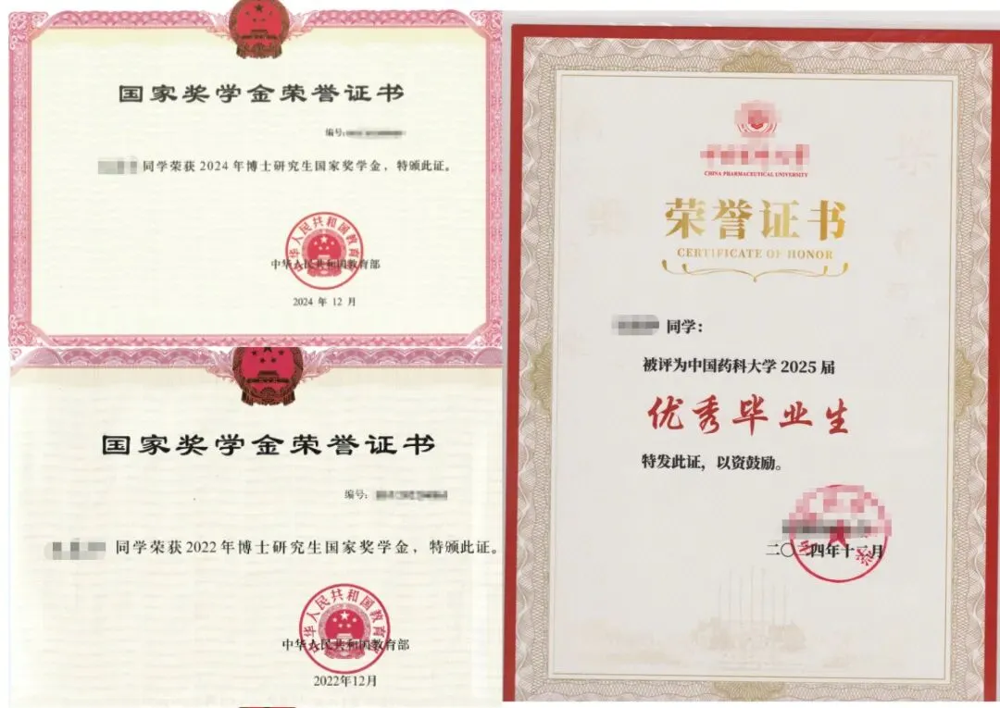
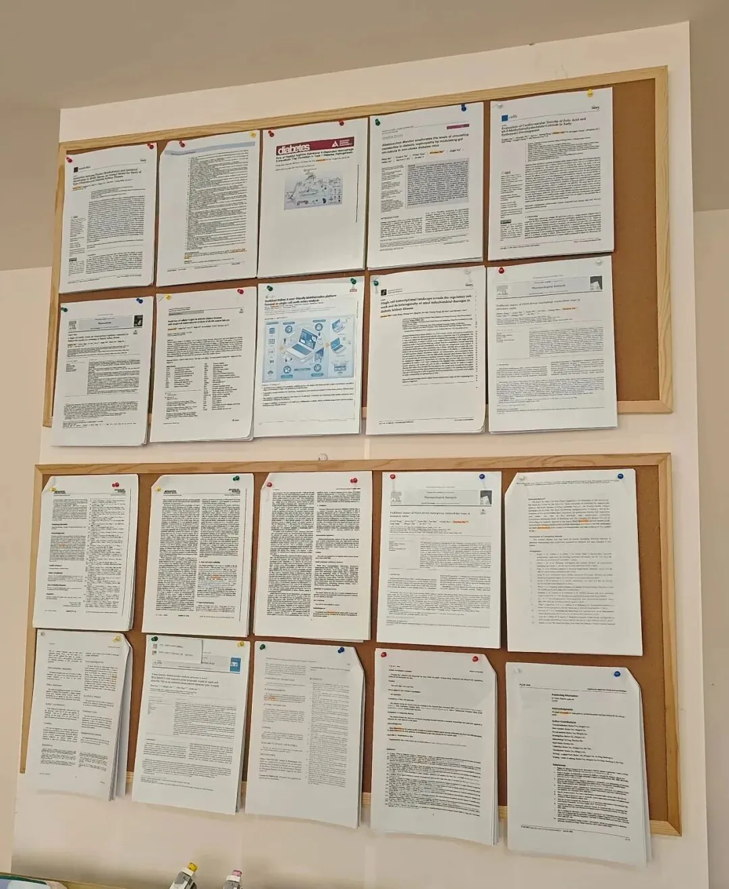
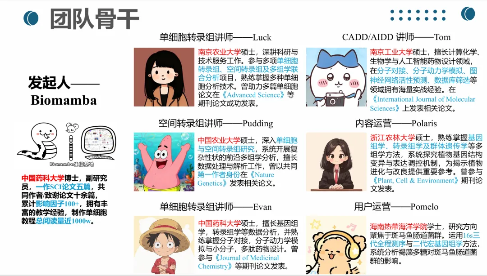
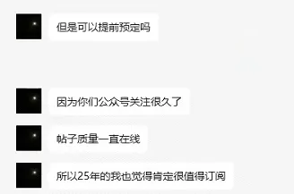
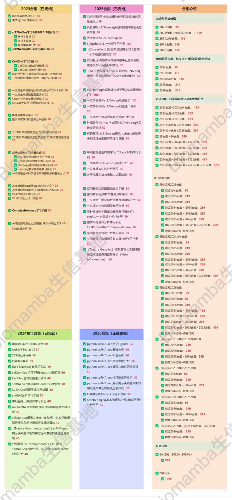

我不是巨人，但是站在我的肩膀上，你可以更进一步！
原文：https://mp.weixin.qq.com/s?__biz=MzAwMzIzOTk5OQ==&mid=2247534877&idx=2&sn=7142b2eaa0f678436236a1131ec81eeb&chksm=9b3c304dac4bb95b5272093f32546a40d11084fa88c3920010f52014949b5e2944581572c440#rd 合集：生信基地

为什么我们敢开放终身订阅

 生信基地现拥有70套+生信资料订阅手册，涵盖了主流的scRNA-seq、scATAC-seq、空间转录组、Bulk RNASeq| 转录组实战、scBCR、scTCR、microRNA分析、甚至基础的R语言基础学习手册、生信Python速查手册；可以说是从入门到入土，从编程基础到主流前沿生信组学分析统统囊括。希望能够帮助大家完成一站式学习，而非东奔西跑，左问AI、右问谷歌、前问老师、后问师兄。
生信基地现拥有70套+生信资料订阅手册，涵盖了主流的scRNA-seq、scATAC-seq、空间转录组、Bulk RNASeq| 转录组实战、scBCR、scTCR、microRNA分析、甚至基础的R语言基础学习手册、生信Python速查手册；可以说是从入门到入土，从编程基础到主流前沿生信组学分析统统囊括。希望能够帮助大家完成一站式学习，而非东奔西跑，左问AI、右问谷歌、前问老师、后问师兄。
至于我们为什么敢向大家开放终身订阅，我想有以下因素：
1、Biomamba于2025年6月刚以优秀毕业生的身份博士毕业，以一作身份发表SCI论文六篇，共同作者+致谢论文十余篇，博士期间两获国奖+4篇一作SCI。现任职百强三甲医院副研究员，时刻处于科研一线，为生信学习事业奋斗终身！我不是巨人，但是站在我的肩膀上，你可以更进一步！

Biomamba在学期间部分证书

Biomamba参与发表论文，欢迎来生信基地参观~2、2025年，生信基地建成，为了表明决心，生信基地的办公室目前为自购持有，还有37年的产权，欢迎随时来看看(南京市江宁区，详询客服微信)。生信基地永不跑路，大家只要考虑自己会不会一直学习生信 。
。
3、生信基地长期招兵买马，配备具有985、211、双一流硕博学位的讲师、生信工程师，能够长期为大家提供优质的生信教程。


终身订阅

经常有用户想要提前订阅资料，看来是真爱粉无疑了。既然氛围都到这了，我们就开放终身订阅 吧。终身订阅用户可以在获得我们未来每年 更新合辑的所有资料，不要担心我们不更新，生信基地还有37年的产权，欢迎随时来看看(南京市江宁区，详询客服微信)。大家只要考虑自己会不会一直学习生信。目前已有的四个合集总价为676￥（年均169￥，共54个万字以上教程，平均一篇才13￥），1999￥ （按四十年算，年均50￥，预计单篇价格低于5￥）即可获得Biomamba生信基地合集终身订阅权限(暂定价格，随着资料增多、通货膨胀，随时涨价)，比小学生的教辅便宜多了。生信基地的任何业务均支持对公，希望加入终身订阅计划的小伙伴可以尽早联系客服微信[Biomamba_zhushou]。
终身订阅须知
目前我们每年能稳定产出10~30篇订阅资料，生信基地建成后只多不少。
大家可以先行联系客服订阅。订阅教程一般都有配套代码和注释，教程也都是编译好的html文件方便大家学习(这意味着我的代码在我手里是可以保证顺利运行)，因此来我这学习的同学也别要求我提供答疑服务(5￥就能拿到数十万字的资料还指望我一对一给你辅导出一篇SCI出来显然不现实)。当然我们后面还会针对一些资料/生信流程开展专题培训与辅导，例如：生信小白入门课(4h视频回放)5.5h入门R语言真手把手教你做scRNA-seq数据基础分析这可能是全网最全的scRNA-seq分析教程！想用Python搞定scRNA-seq看这里一次搞定Python空间转录组分析 这些就是终身订阅合辑以外的独立服务啦，也欢迎大家来联系我们咨询。——Biomamba
已有订阅合辑资料
以下内容终身订阅的
用户可直接获得，后续内容我们持续发布中
2026订阅合辑：

持续更新中！！！
** **
2025订阅合辑：
《Cell》复现|中性粒细胞scRNA-seq图谱阐明抗肿瘤抗原呈递效力
《Cancer Cell》|时空单细胞揭示CRC的PD-1治疗免疫细胞动态
代码复现|吞噬作用增强肿瘤中巨噬细胞的氧化代谢和免疫抑制特征
肿瘤异质性分析必备| 一文学会四种scRNA-seq拷贝数变异分析
代码复现| scRNA-seq揭示人纤维化皮肤病中的成纤维细胞异质性与增殖
《NC》代码复现|snATAC联合scRNA-seq揭示小鼠肾脏细胞分化程序与疾病靶点
三种方法教你搞定空转数据邻域分析：squidpy+stSME+NMF分解
空转细胞通讯分析学习手册：CellPhoneDB+Commot+stLearn
《Nature Genetics》文献复写 | 结直肠癌免疫细胞的高清空转分析（Visium HD+Xenium）
龙年订阅合辑：
龙年订阅须知 单细胞Figure 1常见图表 快速上手Seurat V5 机器学习基础手册 scRNA-Seq学习手册Seurat V4修订版 Bulk RNASeq| 转录组实战scRNA-Seq双细胞过滤手册 CellChat空转细胞通讯合辑 scRNA-Seq学习手册Seurat V5更新版 SCENIC转录因子调控网络图 scATAC分析学习手册 单细胞拷贝数变异学习手册 microRNA-靶标相互作用及疾病和药物关联分析《NC》代码复现| scRNA-seq揭示人纤维化皮肤病中的成纤维细胞异质性和间充质成纤维细胞增加 《Nature Communications》| scRNA-seq揭示头颈癌早期转移过程中潜在的免疫逃避机制 代码复写《Developmental Cell》|利用scRNA-seq对新生儿~成人肝脏发育和成熟的时间分析2023订阅合辑 2022资料合辑(重置链接) scRNA-Seq学习手册2023_R语言版一文搞定拟时序分析的下游可视化探索 Seurat中如何让细胞听你指挥 《拟时序分析》3.monocle2实操：完整版 一文搞定单细胞基因集评分 改造单细胞降维图| 2.ggplot2中的DIY 改造单细胞降维图| 3.3D降维图与动图绘制 一文搞定单细胞/空间转录组的WGCNA分析 SCENIC单细胞转录因子预测|2.学习手册生信Python速查手册 单细胞复写|3.急性心肌梗塞(AMI)外周血scRNA-Seq分析实战 SCENIC单细胞转录因子预测|4.精简版流程 《细胞通讯》2.CellChat基础分析教程 《细胞通讯》2.2CellChat多组别分析 《细胞通讯》CellChat学习手册 《拟时序分析》3.monocle2实操：完整版 ComplexHeatmap学习手册沉浸式统计细胞比例VlnPlot的ggplot改造 scRNA-Seq学习手册Python版 空间转录组学习手册合辑 Seurat空间转录组学习手册 Scanpy空间转录组学习手册 Stereopy空间转录组学习手册Squidpy空间转录组学习手册 影像组学学习手册 R语言基础学习手册 一文搞定空间转录组与单细胞测序的整合分析 基于深度学习的图像分类任务 2022订阅合辑2022资料合辑 单细胞数据基础分析学习手册 一文搞定拟时序分析的下游可视化探索 Seurat中如何让细胞听你指挥 改造单细胞降维图| 2.ggplot2中的DIY 改造单细胞降维图| 3.3D降维图与动图绘制
终身订阅持续更新中~~~


如何联系我们

 留一个领取资料、开箱即用的单细胞分析镜像的微信号[Biomamba_zhushou]，方便各位随时交流。同时我们也构建了交流群矩阵，欢迎大家入群讨论。
大家可以阅读完这几篇之后添加给生信入门初学者的小贴士
没有检索，就没有发言权
留一个领取资料、开箱即用的单细胞分析镜像的微信号[Biomamba_zhushou]，方便各位随时交流。同时我们也构建了交流群矩阵，欢迎大家入群讨论。
大家可以阅读完这几篇之后添加给生信入门初学者的小贴士
没有检索，就没有发言权
已有生信基地联系方式的同学无需重复添加
 您点的每个赞和在看，我都认真当成了喜欢
您点的每个赞和在看，我都认真当成了喜欢